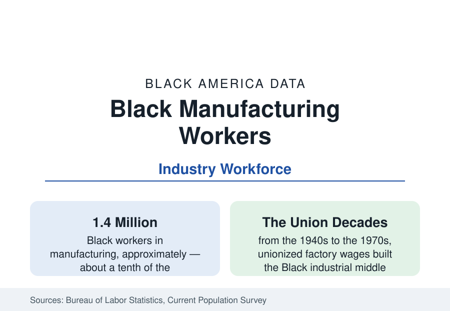

Black Employment
Black Workers in Manufacturing: The Industry That Built the Black Middle Class
Black workers form about a tenth of the manufacturing workforce — an industry whose union decades built the Black middle class and whose contraction reshaped it. The BLS data.

About 1.4 million Black workers are employed in manufacturing — roughly a tenth of the industry's workforce — concentrated in the durable-goods belt of the Midwest and South: autos and parts, steel and metals, food processing, and machinery. No industry's history is more entangled with Black economic life: the unionized factory wage was the twentieth century's great engine of Black middle-class formation, and the industry's contraction from its 1979 peak is the background condition of half the city profiles in this reference. This article reports the manufacturing workforce data.
The Segments and Their Geography
Black manufacturing employment concentrates where the plants are. Motor vehicles and parts — assembly in Michigan, Ohio, Kentucky, Tennessee, Alabama, and Georgia, with the parts belt around them — employs Black workers at shares above the industry's average, the legacy of the Detroit-centered hiring of the union era and the Southern transplant factories' local workforces since. Primary metals and fabricated products carry the steel belt's communities (Birmingham, Gary, the Mon Valley). Food processing — the largest nondurable segment — employs Black workers at its highest shares in the poultry, meatpacking, and beverage plants of the South and Midwest, at the industry's lowest wages. Electrical equipment, machinery, and chemicals run between. The map is the census section's industrial map read at the plant gate.
The Union Era's Arithmetic
The historical data explain the industry's weight in Black memory. From the 1940s through the 1970s, the industrial unions' seniority-and-scale contracts compressed factory wages toward a common standard that narrowed racial pay gaps inside the plant more completely than in any other sector — the research literature's canonical finding is that Black autoworkers and steelworkers of that era earned at or near the national median family income, bought homes in the factory suburbs, and sent children to college at rates the communities' data still show. Manufacturing's Black workforce was never a majority of Black employment — services and government were always larger — but it was the wage-setting sector, the one whose standard anchored the industrial cities' whole Black economies of retail, services, and institutions.
The Contraction and Its Distribution
The industry's employment fell from its 1979 peak of about 19.5 million to the range of 12 to 13 million today, and the distribution of the loss is the demographic fact: the closures concentrated in the durable-goods belt where Black workers were concentrated, in the oldest plants in the oldest Black industrial cities — the steel valleys, the foundry towns, the Detroit-Ohio auto corridor of the city profiles. Black manufacturing employment fell further and recovered less completely than the industry's average in the research series, with the displaced cohort's outcomes (lower re-employment wages, earlier labor-force exit) documented in the dislocation literature. The industry's recent stabilization and the current decade's factory construction boom — semiconductors, batteries, vehicles, substantially Southern and substantially federally subsidized — is the first expansion chapter in the data in two generations, and its workforce composition is being written now in the battery belt's hiring.
Wages and the Modern Plant
Modern manufacturing pays Black workers a median near the industry's overall pattern with the familiar internal spread: unionized assembly and the skilled trades (electricians, millwrights, tool-and-die — the apprenticeship-gated tiers where Black representation is thinnest in the trade data) at the top, the Southern food-processing and parts plants at the bottom. Union density in manufacturing has fallen from the union era's third of the workforce to under a tenth in the private sector's current data, and the wage premium data have followed it down as an equalizer. The industry's Black workforce is also aging in the survey data — the union-era cohort's retirements are the current decade's exit wave — making the battery-and-chip expansion's hiring the demographic hinge the next censuses will measure.
Reading the Manufacturing Data
Manufacturing is a tenth of the Black workforce and the author of its modern class structure: the wage that built Park Hill and Prince George's County's predecessors was earned, in city after city of this reference, on a factory floor. The data now ask the follow-up question — whether the new factory map, drawn in the South's battery belt, writes a second chapter or a footnote.
More in Black Employment
The Black Unemployment Rate: The Two-to-One Pattern
Black unemployment runs at roughly twice the White rate — 5.5 percent against 3.3 percent in annual averages — a ratio stable across five decades of federal data. How it is measured and why it persists.
Black Median Weekly Earnings: The 80-Cent Ratio
Black full-time workers earn a median of about $900 a week — roughly 80 cents for every dollar White workers earn. The BLS earnings data by group, gender, and occupation.
Black Labor Force Participation: Working at National Rates
Black labor force participation runs at roughly the national rate — and Black women participate at higher rates than White women. The BLS participation data.
Source: U.S. Bureau of Labor Statistics, Current Population Survey; Economic Policy Institute and academic manufacturing employment research.